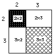
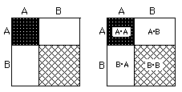
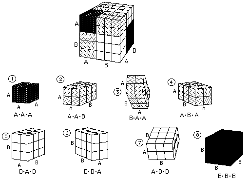

Sample Problems from Chapter 9
(leading to Ian's great discovery!)
Chapter 9: The Binomial Expansion and Infinite Series
Pascal's triangle of numbers, although named after Pascal, was known much before
his time. If there is one piece of mathematics that exhibits many patterns, this
is it. There are triangular numbers and tetrahedral numbers, and even the
Fibonacci numbers are in it. I have 7 year olds doing #'s 1 and 3 below.
Ways to get Pascal's triangle:
1. The number of routes between two points on a grid.
2. Using squares and cubes.
3. The 'people tiles'.
4. How many ways can you turn 4 light switches on and off?
5. How many ways can 4 coins come up whan tossed?
6. How many ways can you form committees of people with 4 people to
choose from?
7. How many trains can you make as long as the purple Cuisenaire rod?
2. Using squares and cubes to get the binomial expansion, Pascal's triangle,
and a look at Ian's Newton-like discovery!
The first problem is to find the area of a 5x5 square. 25, of course. Now we'll
break up the side of this square into two pieces, 2 and 3 units (5 as before)
and find the area of each piece.
 So (2+3)2= 2*2 + 2*3 +
3*2 + 3*3 = 25

Sean, who was 8 at the time, wrote this for the area of the square whose sides
are (A+B),
(A + B)2 = (A+B)*(A+B) = A*A + A*B +
B*A + B*B. He said these are the possible ways of
putting the two letters, A and B together, 2 at a time! I suggested we also
write this as
(A + B)2 = A2
+ 2*A*B + B2.Using the
distributive property you would get the same thing. Then he went on to do
(A + B)3 the same way, saying this
would be the number of ways to use 2 letters, 3 at a time. He got
(A + B)3= A*A*A + A*A*B + A*B*A + B*A*A +
A*B*B + B*A*B + B*B*A + B*B*B. or
(A + B)3= A3
+ 3* A2*B + 3*A*B2
+ B3
I have 2cm cubes which I made into the pieces below. I have
students build a cube out of them, then name each piece and write the statements
above.  What do we have
so far?
(A + B)0 = 1
(A + B)1 = 1*A
+ 1*B
(A + B)2 = 1*A2
+ 2*A1*B1
+ 1*B2
(A + B)3 = 1*A3
+ 3*A2*B1
+ 3*A1*B2
+ 1*B3
(A + B)4 = 1*A4
+ 4*A3*B1
+ 6*A2*B2
+ 4*A1*B3
+ 1*B4
What patterns do you see in the above work? In the bolded numbers
(the coefficients)? In the exponents? How many terms in each row? What is the
sum of the coefficients in each row? Can you write down the next 2 rows?
Ian, received his Ph.D. in mathematics at The
Univ. of Chicago. He worked with Don in The Math Program, from 2nd grade until
the Summer of 1989, about 12 years. The last 3 summers he asked if he could help
teach others with Don, which was great! Ian was doing derivatives at age 11 and
invented, among other things, a way to get any number in Pascal's triangle at
age 12; Newton did a similar thing at age 19! See below. Ian also helped edit
Don's worksheet book.
To Ian's great discovery!
To order
Don's materials
To choose sample problems from other chapters
Mathman Home